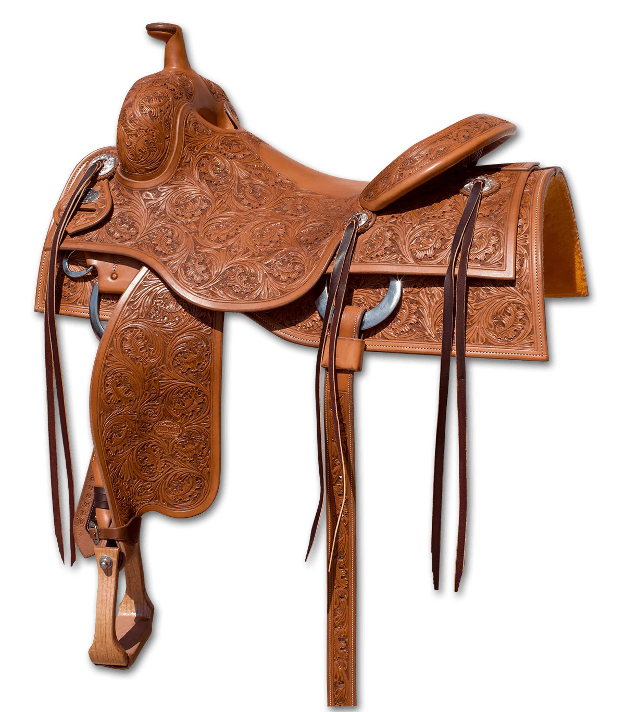

Official Sponsor
Andy Maschke builds the SS Ranch Cutter for NCHA competition and serious ranch cutting work — hand-crafted in the USA on SYMMETREES™ glass-encased wood trees.
Featured Build

| Tree | Glass-Encased Wood SYMMETREES™ |
|---|---|
| Tooling | Full Ranch Cutter tooling throughout |
| Leather | H/O Skirting Leather |
| Lining | Sheepskin skirt lining |
| Origin | Hand-crafted in the USA |
| Design | Cutting seat geometry — deep seat, high cantle |
Andy Maschke has spent decades building performance saddles for NRHA and NCHA competitors at the highest levels of both sports. His SYMMETREES™ technology — wood trees encapsulated in fiberglass for moisture resistance and dimensional stability — brings consistency to a category where tree warping has historically been a real-world problem. Every saddle leaves his shop with H/O skirting leather, sheepskin skirt lining, and the same attention to tree fit that separates a competition build from a shelf saddle. contact Superior Saddlery directly for current availability and custom build options.
Also Available
David Solum carries certified pre-owned cutting saddles from makers including Teddy Johnson and Calvin Allen — all personally inspected, priced honestly.
Browse Certified Used →